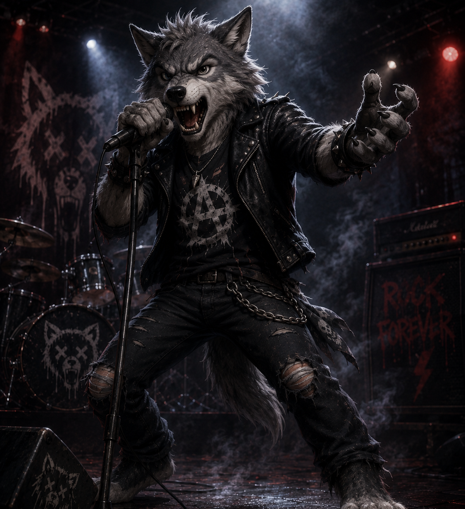

| Найближчі концерти | |||
|---|---|---|---|
| Місто / Заклад | К-сть місць | Дата і час | |
| Київ - Docker-G Pub | 250 | 25.10.2025, 19:00 | |
| Львів - !FESTrepublic | 400 | 01.11.2025, 20:00 | |
| Одеса - Зелен театр | 700 | 09.11.2025, 19:30 | |
| Харків - ArtZavod | 500 | 16.11.2025, 19:00 |
Учасники гурту
Максим - гітара

Олена - вокал
Тарас - барабани
Наша історія
"Грим та Грім" народився з бажання створювати музику, яка відчувається серцем. Ми почали свій шлях у маленькій студії в центрі Києва, де кожен акорд, кожне слово було наповнене емоціями та переживаннями. Це було місце, де народжувались наші перші пісні, де ми вчились грати разом як єдиний організм.
За роки нашої діяльності ми виступили на десятках сцен, від невеликих клубів до великих фестивалів. Наша музика - це поєднання традиційного року з сучасними елементами, що робить її унікальною та впізнаваною. Ми не боїмось експериментувати з звуком, додаючи електронні елементи або народні інструменти.
Кожен наш виступ - це не просто концерт, а справжня подія, де ми ділимося своєю енергією з глядачами та створюємо неповторну атмосферу. Ми віримо, що музика має силу об'єднувати людей, створювати спільноти та надихати на зміни.
Наш колектив складається з досвідчених музикантів, кожен з яких привносить свій унікальний стиль та бачення. Максим створює неймовірні гітарні рифи, Олена зачаровує своїм вокалом, а Тарас тримає ритм, який змушує серця битися в унісон з музикою.
Зв'яжись з нами
Хочеш заказати виступ або маєш питання? Пиши!